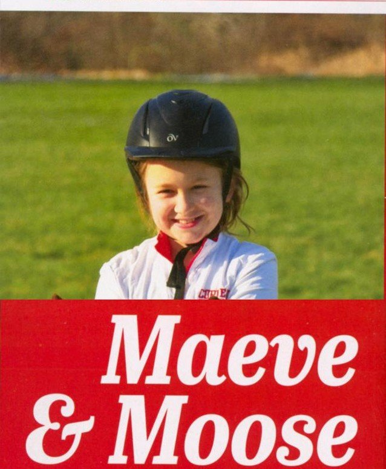

Selected Work
Galleries
Five collections spanning commercial, equine, client, personal, and editorial work.

Product / Commercial
Commercial
Studio and location work for commercial clients, across construction, farming, and product photography.

Sports / Equine
Equine
Equestrian action and portraiture, including Cornell’s varsity program.

Cycling / Retail
Client Projects
Commissioned work for cycling and retail clients, including Gorges Cycles.

Landscape / Street
Personal Projects
Landscapes, birds in flight, cityscapes — ongoing personal work.

Editorial / Magazine
Editorial
Assignment photography for Sidelines Magazine.